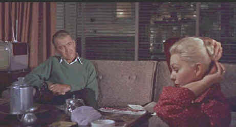

Universal/1958/128m/WS 1.85:1
 |
Getting to know you in Vertigo©Universal |
The best example of Vertigo’s
brilliance is the extended sequence when Scotty trails Madelaine. The long, method,
investigation by Scottie is presented by Hitchcock without dialogue. With the aid of
Hermann’s grand score, the pictures tell the story eloquently, culminating in
Madelaine’s dramatic plunge into the waters of San Francisco Bay. The choice of
images, the variety of locations, and the superlative pacing of this sequence alone makes Vertigo
a worthy viewing choice. And somehow, with the truer colors now restored the complex story
line too becomes more vivid. The plot still is convoluted, but maybe the appreciation for
this great series of scenes relates to a more mature point of view. The kid that first saw
Vertigo longed for more action and maybe just a little blood, but the beauty of
the San Francisco locales, Kim Novak and Hitchcock’s great eye for beauty of all
sorts is captivating this time around.
James Stewart’s
performance as Scotty Ferguson is typically understated and brilliant. I am never quite
sure what’s going through his mind, what motivation drives him to uncover the mystery
of Judy after Madelaine’s death. Stewart strides atop an unsteady picket fence with
grand poise, ever garnering the sympathy of his audience. Kim Novak is a fortuitous
replacement for Vera Miles, Hitchcock’s original choice for the role. Novak took on
the dual role of Madelaine/Judy when Miles inconveniently became pregnant. It turned into
Novak’s best screen turn. Novak is an actress that exudes mystery. Her features add
up to a beautiful woman, but they are somehow overstated as well. A fragility about her
presence is a perfect match for Vertigo.
Universal has mounted Vertigo in a special edition
release worthy of its pedigree. Complimenting the beauty of the restored film is an
excellent second audio commentary from the Vertigo restoration team of Robert Harris and James Katz, associate producer
Herbert Coleman, screenwriter Samuel Taylor. Many aspects of the challenge of the
restoration are explained scene specifically in the commentary. Critical decisions
involving the character of the film were involved in finding the truth to the restoration.
A special produced by American Movie Classics for cable chronicles the restoration process
and stands out as a call for preservation of our film heritage. The special, however,
doesn’t go far enough in documenting the awesome task of restoration. An alternate
European "censorship" ending is included as well as several theatrical trailers.
Story boards reveal how closely Hitchcock envisioned his finished films.
Vertigo adds up to enormous fun. It’s a classic
Hitchcock mystery brilliantly produced and directed. DVD is the best platform to retrace
some of your favorite Vertigo sequences. Vertigo is wonderful on
DVD. Color accuracy viewed through DVD component outputs is nothing short of superb.
Hitchcock's subtle pallette reflected in the important restoration by the Harris/Katz team achieves perfection. The added
resolution on DVD sharpens up some a couple of scenes that were marginally soft on laser.
This is is first rate transfer all the way. Dolby Digital 5:1
effects create the perfect surrounding ambiance and the wonderful. Bernard
Hermann music has never fared as well. A definite must for every DVD collection!